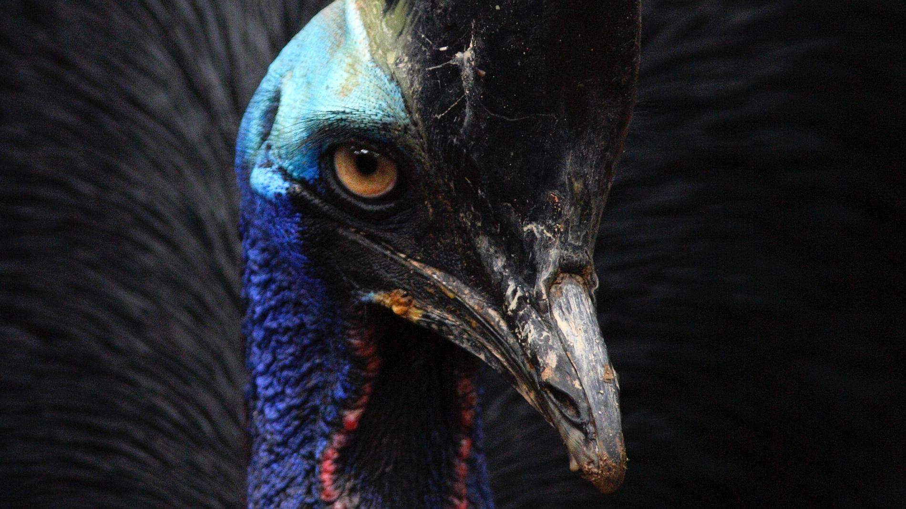
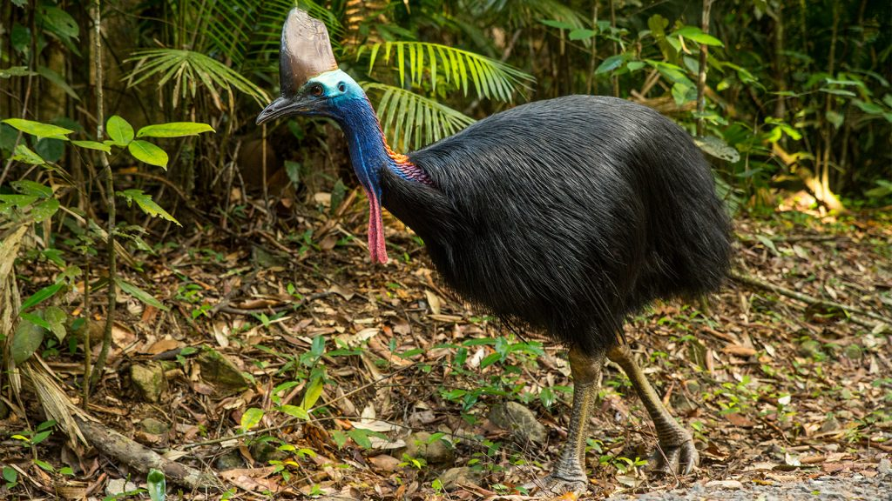

CASUAR
O casuar (Casuarius spp.) é uma ave do grupo das aves ratitas de grande porte, nativas do nordeste da Austrália, Nova Guiné e ilhas circundantes. São aves curiosas que costumam imitar movimentos de humanos depois de observá-los atentamente, embora não sejam muito amigáveis ou domesticáveis. As três espéciesde casuar existentes pertencem à família Casuariidae e são juntamente com o avestruz, a ema, o avestruz-somali e o emu as maiores aves existentes na atualidade.
O habitat preferencial do casuar são zonas de floresta tropical, onde haja um grande número de árvores disponíveis para produzir os frutos de que se alimentam. Neste ambiente o casuar desempenha a importante função ecológica de dispersar as sementes das árvores. O casuar é uma figura importante na mitologia das populações nativas da Oceania e representa geralmente uma figura maternal.
